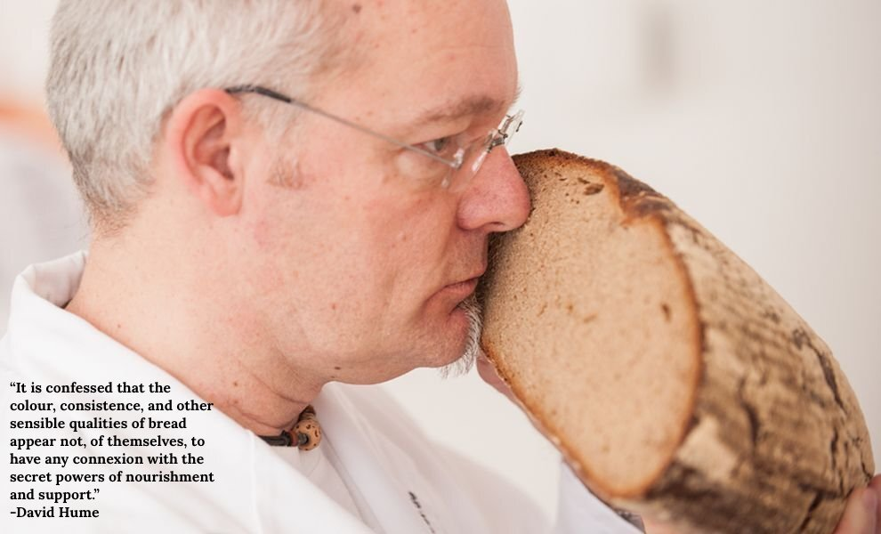

Statistics 298: Statistical Foundations Reading Group
UC Berkeley, Fall 2025

This is the webpage for the Fall 2025 Statistical Foundations Reading Group.
Readings to date:
Interpretation of probability
- Week 1: Subjective interpretation of probability
- Week 2: Frequentist interpretation of probability
- Week 3: Best systems interpretation of probability
The problem of induction
Bayesian versus frequentist statistics
The replication crisis
- Week 8:
- Main readings:
- Optional readings:
Bibliography
De Finetti, Bruno. 1937. “Foresight: Its Logical Laws, Its Subjective Sources.” In Breakthroughs in Statistics: Foundations and Basic Theory, 134–74. Springer.
Efron, B. 1986. “Why Isn’t Everyone a Bayesian?” The American Statistician 40 (1): 1–5.
Freedman, David. 1995. “Some Issues in the Foundation of Statistics.” Foundations of Science 1 (1): 19–39.
Freedman, David, and Philip Stark. 2003. “What Is the Chance of an Earthquake.” NATO Science Series IV: Earth and Environmental Sciences 32: 201–13.
Gelman, A. 2008. “Objections to Bayesian Statistics.”
Goodman, N. 1965. “The New Riddle of Induction.”
Hajek, Alan. 2011. “Interpretations of Probability.” Stanford Encyclopedia of Philosophy, 1–47.
Hájek, Alan. 2009. “Fifteen Arguments Against Hypothetical Frequentism.” Erkenntnis 70 (2): 211–35.
Hall, Ned. 2020. “Is Chance Ontologically Fundamental? Chance and the Great Divide.” In Current Controversies in Philosophy of Science, 123–42. Routledge.
Henderson, L. 2024. “The Problem of Induction.” In The Stanford Encyclopedia of Philosophy, edited by Edward N. Zalta and Uri Nodelman, Winter 2024. https://plato.stanford.edu/archives/win2024/entries/induction-problem/; Metaphysics Research Lab, Stanford University.
Henrion, M., and B. Fischhoff. 1986. “Assessing Uncertainty in Physical Constants.” American Journal of Physics 54 (9): 791–98.
Hume, D. 2007. “An Enquiry Concerning Human Understanding.”
Ioannidis, J. 2005. “Why Most Published Research Findings Are False.” PLoS Medicine 2 (8): e124.
Kotzen, M. 2022. “The Bayesian and Classical Approaches to Statistical Inference.” Philosophy Compass 17 (9): e12867.
Lecam, L. 1977. “A Note on Metastatistics or ‘an Essay Toward Stating a Problem in the Doctrine of Chances’.” Synthese 36 (1): 133–60.
Lewis, David. 1994. “Humean Supervenience Debugged.” Mind 103 (412): 473–90.
Loewer, Barry. 2004. “David Lewis’s Humean Theory of Objective Chance.” Philosophy of Science 71 (5): 1115–25.
Neyman, J. 1957. “‘Inductive Behavior’ as a Basic Concept of Philosophy of Science.” Revue De L’Institut International De Statistique, 7–22.
Popper, K. 1963. “Science as Falsification.” Conjectures and Refutations 1 (1963): 33–39.
Spanos, A. 2013. “A Frequentist Interpretation of Probability for Model-Based Inductive Inference.” Synthese 190 (9): 1555–85.
Steeger, Jer. 2024. “Hypothetical Frequencies as Approximations.” Erkenntnis 89 (4): 1295–325.
Von Mises, Richard. 1941. “On the Foundations of Probability and Statistics.” The Annals of Mathematical Statistics 12 (2): 191–205.
Footnotes
Meme credit: Advik Shreekumar↩︎